{kind=link}
{kind=link}

Данная статья писалась еще в 2011 году, но так как я все никак не мог ее закончить, она у меня валялась в черновиках. Немного подумав, я решил, что стоит опубликовать ее, ибо как пособие она будет полезна, а если что-то будет отсутствовать — пишите в комментарии, дополню.
Понадобилось мне как то сделать сервер для видео наблюдения, который мог бы писать картинку по тревоге (движению), работал бы на ОС Linux (в моем случае на Ubuntu), который мог бы мне показать что творится в моем уголке в любой точке мира (точнее говоря чтобы я мог смотреть события и по мобильному телефону с гребанным глюченным МТС интернетом) ну вот как то так … А назову я этот проект «DVR сервер».
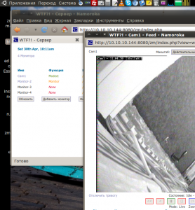
Для реализации своей «пошлой мечты» или чьей то просьбы я в качестве ОС выбрал Ubuntu Linux 10.10, в качестве программы выбрал ZoneMinder. В качестве железки был выбран старый компьютер Intel Pentium 4 с материнской платой ASRock P4i65G (плата была заменена на Asus P4P800SE, так как ASRock гавно!) и 512 мегабайтами оперативной памяти. Так же была использована 4-х канальная DVR плата на чипе Fusion 878A. Возможности этого ПО я буду рассматривать по ходу написания моей статьи … фотографии и ссылки — прилагаются … В данной статье я так же рассмотрю вопрос тонкой настройки ZM, его нормального перевода на русский язык и небольшое видоизменение внешнего вида консоли. Для чего ? ну не нравится мне однообразие …
Ну что же, начнем ! …
1.Установка необходимого ПО для работы с ZoneMinder
Представим что на нашей железке установлена OC Ubuntu Linux 10.10. Для начала обновим все компоненты:
$ sudo apt-get update
$ sudo apt-get upgrade
После успешной отработки этих команд приступим к установке необходимого ПО. Установим программу tvtime для проверки работоспособности платы и камер, так же установим поддержку SSH на наш сервер, чтобы после его можно было спрятать в шкаф:
$ sudo apt-get install tvtime openssh-server openssh-client v4l-conf
Далее по желанию можно установить WebMin, как указано в этом руководстве.
Еще не помешает увеличить количество общей памяти, которую сможет использовать ZM. Для этого откроем файл…
$ sudo vim /etc/sysctl.conf
… и добавим туда строчку (ели ее нет) …
kernel.shmmax = 167772160
Теперь устанавливаем apache, php, mysql и все необходимые модули:
$ sudo apt-get install apache2 mysql-server php5 libapache2-mod-php5
Перезагружаем apache2 и проверяем работу web сервера пройдя по адресу http://localhost. Должно быть написано «IT WORKS!»
$ sudo /etc/init.d/apache2 restart
Далее устанавливаем phpmyadmin:
$ sudo apt-get install phpmyadmin
Проверяем phpmyadmin пройдя по адресу http://localhost/phpmyadmin.
Учитывая, что моя железка находится за маршрутизатором, нам не нужно палить 80 порт, так как он занят уже другой железкой. Поэтому поправим некоторую конфигурацию apache, а точнее изменим порты которые будет слушать apache:
$ sudo vim /etc/apache2/ports.conf
Приводим его к виду:
Listen 8080
Далее правим конфиг default хоста:
$ sudo vim /etc/apache2/sites-available/default
Там переделываем строки <VirtualHost *:80> на <VirtualHost *:8080>
Перезапускаем сервер:
$ sudo /etc/init.d/apache2 restart
Проверяем сервер по адресу http://localhost:8080 — там мы так же должны увидеть надпись «IT WORKS!»
2.Установка ZoneMinder
Для установки этого ПО нам не придется скачивать и компилировать какие либо файлы, мы можем запросто воспользоваться репозитарием нашей Ubuntu, поэтому набираем:
$ sudo apt-get install zoneminder
Далее чтобы по адресу http://localhost:8080/zm мы увидели консоль — сделаем ссылку для конфигурации apache:
$ sudo ln -s /etc/zm/apache.conf /etc/apache2/conf.d/zoneminder.conf
… и перезагрузим конфиги …
$ sudo /etc/init.d/apache2 force-reload
Теперь у нас есть рабочая консоль ZM … если она доступна по адресу http://localhost:8080/zm, то приступим к настройке нашей dvr платы.
3.Настройка DVR платы.
Поиски недорогого нормального, можно и старого девайса для захвата видеосигнала с камер с трудом увенчались с успехом. Долго мне пришлось оббегать в начале Буденовский, потом уже Савеловский, но плата была найдена! Вот собственно она:
Вид спереди:
После того, как я ее вставил в систему, Linux ее определил как SIMUS GVC1100. Вроде бы все верно, да и на картинках из интернета она была практически схожа на вид, но работала она не корректно. Проблема была в том, что при ее проверке работал только video0 причем любая программа при выборе видео канала показывала картинку только с Composite0. Поэтому нам немного пришлось поплясать с бубном. Для начала я проделал операцию, которая расписана в этой статье. Таким образом я сузил круг поиска. Далее я методом тыка начал пробовать платы из этого списка… как это делалось:
Выгружаем модуль bttv
$ sudo rmmod bttv
Загружаем модуль с указанной моделью платы (указывать тут):
$ sudo modprobe -v bttv card=0x5d tuner=-1 autoload=0
Проверяем все ли правильно сделали:
$ sudo v4l-info | head -n 10 | grep card
card : "BT878 video (IDS Eagle)"
Если да, то запускаем tvtime и смотрим как что работает. Если все каналы работают и нормально переключаются то едем пить мартини :)… если нет, то опять выгружаем модуль, загружаем с другой платой и проверяем … Надеюсь у вас все ограничится менее тяжелыми муками … В моем случае плата завелась как IDS EAGLE 0x5d. Хз, может быть это и она … но главное работает. Осталось сделать так, чтобы плата продолжала работать и после перезагрузки, для этого создадим файл:
$ sudo vim /etc/modprobe.d/bttv.conf
и внесем в него следующее содержимое:
options bttv card=0x5d tuner=-1
Для верности перезагрузим машину и проверим снова:
$ sudo v4l-info | head -n 10 | grep card
card : "BT878 video (IDS Eagle)"
Если все так, то продолжаем ….
4.Настройка ZoneMinder
Отлично! Все работает, все красиво, поэтому приступаем к настройке ZM. Для начала необходимо добавить в группу Video пользователя www-data. Сделать это можно либо с помощью WebMin, либо командой:
$ sudo adduser www-data video
Сделать это нужно, чтобы следующие 2 часа мы ковыряли настройки а не выясняли почему нет картинки. Теперь заходим по адресу http://localhost:8080/zm.
Далее проходим по ссылке Options. Здесь будут описаны все опции которые есть в ZM.
Перевод данной консоли я осуществлял без особых знаний английского, поэтому в начале будет Русская версия, а ниже уже версия на английском языке.
Приму любую критику в свой адрес, так как у некоторых параметров был непонятен смысл. Так же кто готов помочь с качественным переводом — буду рад!
Вкладка Система (System):
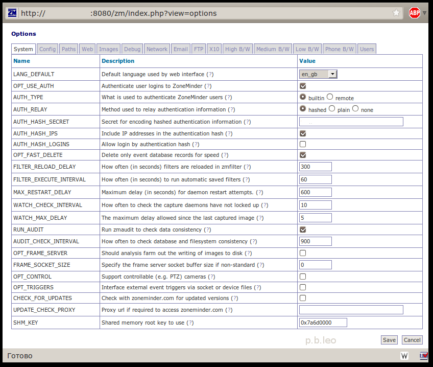
LANG_DEFAULT - Локализация по умолчанию (я выбрал Русский);
Немного о Русском языке консоли.
Файлы с Русским языком находятся в директории /user/share/zoneminder/lang. Файл ru_ru.php сохранен в кодировке Koi8_ru, что нельзя назвать отличным решением. Поэтому я с помощью Декодера расположенного на сайте Артемия Лебедева перевел его в utf_8, далее при помощи gedit файл так же был сохранен в кодировке utf_8 и заменен предыдущей, криво не до переведенной версии. Данный файл вы можете скачать по этой ссылке. (ссылка появится тогда, когда я доделаю файл)
Но немного пощелкав интерфейс я понял, что не весь перевод храниться в файле локализации. Ссылки пояснений и описание опций находится в в базе данных zm, таблице Config. Сама таблица сохранена в кодировке latin1_swedish_ci, поэтому русские символы там не отображаются. Решение данной проблемы я пока не реализовал, но поверьте, как что сделаю — вы увидите это здесь.
Так же у ZM есть скин для мобильных устройств. Чтобы его увидеть вам нужно пройти по ссылке http://localhost:8080/zm/index.php?skin=mobile. Но что мне не понравилось — это то что отсутствует ссылка на переход в mobile версию и возврат в классическую версию. Поэтому я проделал следующие действия:
Открываем файл login.php шаблона classic …
$ sudo vim /usr/share/zoneminder/skins/classic/views/login.php
… находим там строчку </form> и после нее добавляем …
<p> <a href="/zm/index.php?skin=mobile">Mobile Ver.</a></p>
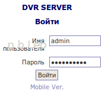
… сохраняем файл и при просмотре страницы авторизации ниже будет ссылка смены шаблона в мобильную версию.
Аналогично проделаем для шаблона mobile, открыть файл:
sudo vim /usr/share/zoneminder/skins/mobile/views/login.php
… найти там строчку </form> и после нее добавляем …
<p><a href="/zm/index.php?skin=classic">Classic Ver.</a></p>.
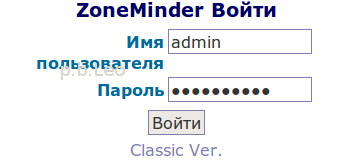
Второй косяк который мне не порадовал — при просмотре мобильной версии с телефона русские символы отображаются как знаки вопросов. Исправляется это методом удаления строчки из нужного файла, для этого откроем этот файл:
$ sudo vim /usr/share/zoneminder/skins/mobile/includes/functions.php
Найдем там строчку
echo( '<?xml version="1.0" encoding="iso-8859-1" ?>'."\n" );
и удалим ее! Таким образом кодировка файла будет отображаться та, которая указанна в файле …/lang/ru_ru.php, в нашем случае это utf8.
Продолжим настройку ZM.
OPT_USE_AUTH — Включить аутентификацию пользователей по логину (Выбираем да. Далее после сохранения параметров вам нужно авторизоваться под пользователем admin и паролем admin. Пароль пользователю можно поменять во вкладке Users, о чем будет сказано позднее);
AUTH_TYPE — Метод авторизации пользователей в консоли ZM. В параметрах можно выбрать как встроенный, так и удаленный (Оставил по умолчанию);
AUTH_RELAY — Метод передачи информации об аутентификации. Возможны параметры hashed plain none. Первый параметр хеширует передаваемые данные, второй метод передает данные в открытом виде, третий отключает проверку подлинности передачи данных. Последний лучше использовать в том случае, если ZM изолирован от сети (Здесь я установил первый метод);
AUTH_HASH_SECRET — секретное слово для шифрования хеша. Если ZM работает в режиме хеширование проверки подлинности, то здесь нужно написать какое нибудь кодовое слово или фразу (ну, вписал…);
AUTH_HASH_IPS — Включить ip адрес в хеш-аутентификацию (Оставил по умолчанию);
AUTH_HASH_LOGINS — разрешать авторизоваться в системе в обход страницы авторизации (авторизоваться по хеш-аутентификации). Для использования этого параметра необходимо задать уникальное кодовое слово или фразу в параметре AUTH_HASH_SECRET (Оставил по умолчанию);
OPT_FAST_DELETE — Если данная опция включена, то в таком случае ZM удаляет те события, которые не существуют в БД (Осталась по умолчанию);
FILTER_RELOAD_DELAY — Как часто (в секундах) фильтры перезагружаются в zmfilter. Данный параметр указывает как часто актуализируется информация о фильтрах из базы данных в zmfilter (Оставил по умолчанию);
FILTER_EXECUTE_INTERVAL — Как часто (в секундах) фильтры сохраняются в zmfilter (Оставил по умолчанию);
MAX_RESTART_DELAY — Максимальная задержка при перезагрузки процесса zmdc. В случае какой либо ошибки процесс перезагружается, данный параметр нужен для того, чтобы не нагрузить сервер бесконечными перезапусками (Оставил по умолчанию);
WATCH_CHECK_INTERVAL — Как часто проверять, что процесс захвата изображения не завис (не закрылся) … (оставил по умолчанию);
WATCH_MAX_DELAY — Максимальная задержка после последнего отснятого кадра (Поставил 30);
RUN_AUDIT — Запускать zmaudit для проверки целостности данных. Данный процесс проверяет записи в БД и файловой системе на соответствие (оставил по умолчанию включенным);
AUDIT_CHECK_INTERVAL — Интервал запуска (в секундах) zmaudit для проверки соответствия записей (Установлено по умолчанию 900 сек);
OPT_FRAME_SERVER — (Отключена по умолчанию, смысл этой опции я не понял);
FRAME_SOCKET_SIZE — максимальный размер буфера передачи для отдельного сокета. Полезно, если снимки нестандартных размеров (Оставил по умолчанию);
OPT_CONTROL — Поддержка управляемых камер (например PTZ). С помощью ZM можно ограниченно управлять камерами, есть образцы камер которые можно дополнить (Так как у меня аналоговые камеры — значения я оставил по умолчанию в отключенном состоянии);
OPT_TRIGGERS — Включить поддержку внешних пусковых механизмов (триггеров). С помощью данной поддержки ZM может взаимодействовать с внешними триггерами, для включения или выключения сигнализации (Так как у меня такова нет — значения я оставил по умолчанию в отключенном состоянии);
CHECK_FOR_UPDATES — Проверять новые версии ZM на официальном сайте. (Оставил по умолчанию — нет);
UPDATE_CHECK_PROXY — Адрес прокси сервера вида http://<proxy host>:<proxy port>/ для доступа к сайту zoneminder.com для проверки обновлений (По умолчанию пусто);
SHM_KEY — Корневой ключ для использования общей памяти. (Оставил значение по умолчанию — пусто);
Вкладка Конфигурация (Config)
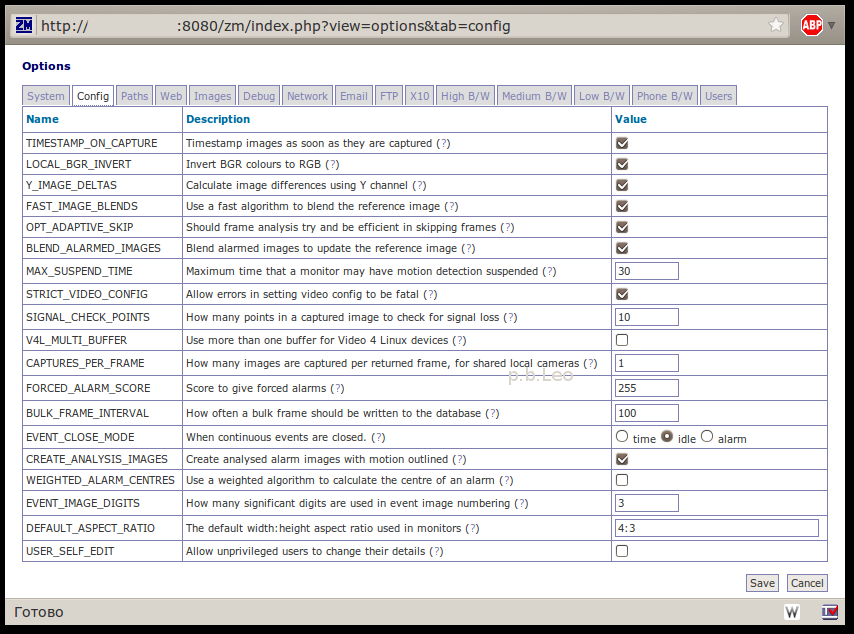
TIMESTAMP_ON_CAPTURE — Установить пометку с датой и временем на изображении (Я установил да);
LOCAL_BGR_INVERT — Инвертировать BGR в RGB. Некоторые DVR платы или камеры могут на кадрах оставлять странные световые оттенки, поэтому можно попробовать включить или выключить данный параметр. Данная опция работает только на локальных камерах (Оставил по умолчанию);
Y_IMAGE_DELTAS — Рассчитывать разницу изображений с использованием Y канала. Когда zm устанавливает различия между изображениями он генерирует изображение «дельта» с оттенками серого между ними. Для этого он определяет выявленные различия между различными RGB цветовыми компонентами и рассчитывает значения оттенков серого. При успешном расчете этого параметра, то будет рассчитываться конвертация каждого пикселя в значение яркости (Y из YUV), а затем будет искать разницу между ними. При не успешном расчете, рассчитывается разница среднего различия каждого цвета, что является простым расчетом. Используя значение Y расчет будет более точным и рассчитываться от будет до 15% быстрее (Оставил по умолчанию включенным);
FAST_IMAGE_BLENDS — Использовать быстрый алгоритм для смешивания необработанного изображения. В большинстве режимов работы ZoneMinder нуждается в смешивании захваченного изображения с хранящимся необработанным изображением, чтобы обновить его для следующего изображения. Результат обычного смешивания в процентах, заданного для монитора, определяет насколько новое изображение отражает необработанное изображение. Есть два доступных для этого метода. Если эта опция включена, тогда применяется базовый расчет, что значит (хотя он и может делать все быстро и достаточно точно (благодаря зацикленности)) что реальный диапазон пиксельных значений в необработанном изображении может быть уменьшен в отличии от того, что в захваченном изображении, например пиксель может достигнуть только максимум, скажем, 250, при том, что захваченное изображение единообразно до 255. Если у вас установлен малый порог разницы пикселей, это может вызвать множество ненастоящих тревог. Альтернативный вариант: выключить эту опцию, что повлечет за собой сохранения дополнительного набора значений, что в свою очередь исключит любые точностные ошибки зацикленности (замыкания, закругления, хз). Это более точно, но до 6 раз медленнее и на самом деле не так необходимо, пока у вас нет проблем со стандартным способом (Оставил по умолчанию);
OPT_ADAPTIVE_SKIP — Должен ли анализ кадра пытаться обработать пропущенные кадры. В старых версиях ZM демон анализа пытался работать одновременно с демоном захвата. Это вызывало некоторые побочные эффекты, из-за отсутствующего куска первого кадра, из за чего срабатывал сигнал тревоги, так как кадры при аварийном срабатывании должны записаться на диск и БД, прежде чем обработать следующий кадр, приводя к задержке между первыми и вторыми кадрами событием. Установка данной опции включает более новый адаптивный алгоритм, при котором демон анализа пытается обработать на столько много кадров, на сколько это возможно, пропуская кадры только в том случае, если есть опасность того что демон захвата перезапишет уже обрабатываемые кадры. Пропуска кадров величина не постоянная, она зависит от размера кольцевого буфера и оставшегося в нем места. Включение этой опции даст значительно лучший охват на начало тревоги вместо смещения любых пропущенных кадров к середине или концу события. Однако вы должны опасаться, что это даст эффект превращения демона анализа во что-то находящееся сразу за демоном захвата и при возникновении событий и при значительных скоростях захвата кадров адаптивный алгоритм возможно не будет выдерживать и не будет иметь время реакции на быстрое нарастание захваченных кадров и таким образом это приведет к переполнению буфера (Оставил по умолчанию включенным);
BLEND_ALARMED_IMAGES — Давать оценку принудительной тревоге. Утилита zmu может использоваться для вызова сигнала тревоги на монитор, а не полагаться на алгоритмы обнаружения движения. Эта опция определяет какую оценку дать аварийному сигналу, чтобы отличить его от регулярных сигналов. Нужно задать числе не более 255 (Оставил по умолчанию 255);
MAX_SUSPEND_TIME — Максимальное время, при котором монитор может быть с приостановленным детектором движения. ZoneMinder позволяет монирторам приостанавливать детектирование движения, (я так понимаю например) при панорамировании камеры. Обычно это доверяется на операторскому восстановлению детектированию движения после того как выключили, т.о. монитор может оказаться в постоянно приостановленном состоянии. Эта опция позволяет вам установить максимальное время, в течение которого камера может быть приостановлена до того, как она автоматически не восстановит детектирование движения (Оставил по умолчанию — 30);
STRICT_VIDEO_CONFIG — Позволить ошибкам при изменении видео конфигурации быть фатальными (как я понял иметь пометку fatal). Некоторые ошибки при настройке видео устройств могут выдаваться при настройке различных видео атрибутов, хотя по факту операция была успешной. Отключение данной настройки позволит выводиться этим ошибкам без отключения демона видеосъемки. Но имейте в виду что в этом случае все ошибки будут игнорироваться, включая те, которые являются реальным, из-за чего видео может не корректно работать. Данную опцию стоит использовать с осторожностью (Оставил по умолчанию);
SIGNAL_CHECK_POINTS — Сколько точек проверяется в захваченном изображении для определения потери сигнала. Для камер, подключенных локально ZM может проверить отсутствие сигнала проверяя определенное количество случайных точек в каждом полученном изображении. В случае если при проверке все эти точки будут одного и того же цвета, то ZM расценит что сигнал от камеры утерян. В данном параметре необходимо указывать, какое количество точек необходимо проверять (Оставил по умолчанию);
V4L_MULTI_BUFFER — Использовать больше чем один буфер для Video 4 Linux устройств. Производительность при использовании Video 4 Linux устройств обычно лучшая если используются множественные буферы, разрешая следующему изображению быть захваченным в то время как предыдущее находится в обработке. Если у вас есть множественные устройства на карте, использующие один вход, который требует переключение, тогда этот метод может иногда вызывать ситуацию, когда кадры из одного источника смешиваются с кадрами из другого. Выключение этой опции предотвращает множественную буферизацию и результирует в в более медленный, но более стабильный захват изображений. Эта опция игнорируется для нелокальных камер или если только единственный вход представлен на базе чипе захвата. Эта опция относится к одной и той же проблеме, что и опция ZM_CAPTURES_PER_FRAME, и вы должны стандартно менять только одну из этих опций одновременно (Оставил по умолчанию — да);
CAPTURES_PER_FRAME — Насколько много изображений захвачено на возвращенный кадр для расшаренных локальных камер. Если вы исползуете камеры подсоединенные к плате видеозахвата, у которой 1 декодер обрабатывает несколько камер, то это может иногда создавать проблему изображения с наложенными кадрами в обратном порядке, из за чего получается плохое качество изображения и внешний вид дифференциального гребня критических точек. Увеличение данной опции позволяет вам увеличивать захваты дополнительных изображений до того, как какое-нибудь из них будет выбрано как захваченный кадр. Это позволяет устройству захвата «успокоиться» и воспроизводить картинку лучшего качества, жертвуя скоростью захвата. Эта опция не работает на сетевых камерах и платах видео захвата у которых несколько декодеров. Эта опция схожа с проблемой опции ZM_V4L_MULTI_BUFFER и вы должны в рядовых случаях менять только одну одну из них одновременно (Изменил на 2, так как возникли проблемы с «одночиповой» картой);
FORCED_ALARM_SCORE — (Оставил по умолчанию 255);
BULK_FRAME_INTERVAL - (Оставил по умолчанию 255);
EVENT_CLOSE_MODE — Когда закрывать (заканчивать) непрерывное событие. Когда вы используете длительные режимы записи (Record или Mocord), события обычно закрываются (или заканчиваются) после определенного срока времени (установленной длины секции). Однако в режиме Mocord движение может быть зафиксировано в конце секции (наверное события). Этот параметр определяет что должно происходить в режиме Mocord. Настройка «По времени» (time) означает что событие будет закрыто в независимости от того, сработает ли тревога или нет. Настройка «Бездействия» (idle) означает что событие будет закрыто только в том случае, если не будет никакой тревоги. В случае появления тревоги событие будет продолжено. Настройка «По тревоге» (alarm) обозначает что событие будет закрыто после окончания тревоги в независимости от длины секции. Таким образом события могут быть короче чем длина секции (оставил по умолчанию idle);
CREATE_ANALYSIS_IMAGES — (оставил по умолчанию — включено);
WEIGHTED_ALARM_CENTRES — Использовать взвешенный алгоритм расчета центра тревоги. ZM всегда вычисляет центральную точку тревоги в зоне, чтобы предоставить информацию о том, где на экране произошло движение. Это можно использовать как экспериментальный способ прослеживания движений или вашими расширениями. При сработанной тревоге или в режиме фильтра это простая середина между степенью обнаруженных пикселей. Данный метод хоть и точный, но создает нагрузку, поэтому по умолчанию отключен (оставил по умолчанию);
EVENT_IMAGE_DIGITS — Сколько цифр использовать для числового индекса кадров событий. Так как при записи событий кадры сохраняются в файловую систему, им присваивается свой числовой индекс. По умолчанию индексу дано 3 цифры, таким образом нумерация начинается с 001, 002, 003 и т.д. Это подходит для большинства сценариев, так как события более чем с 999 кадрами редко записываются. Однако если вы хотите записывать очень большие события, а так же используете стороннее ПО, то вы можете увеличить это значение, чтобы гарантировать правильную сортировку кадров. Но будьте осторожны, увеличение данного параметра на рабочей системе может сделать существующие события недоступными. Уменьшение данного параметра не создаст никаких побочных эффектов (оставил по умолчанию 3 символа);
DEFAULT_ASPECT_RATIO — Формат изображений по умолчанию используемый на мониторах. Определяя размеры мониторов вы можете оставить отметку (checkbox) чтобы быть уверенным что соотношение ширины и высоты указаны верно. Если отметка (checkbox) не работает, то данная опция не имеет никакой силы. Данная настройка позволяет вам указать отношение ширины и высоты формата изображения (оставил по умолчанию 4:3);
USER_SELF_EDIT — Разрешать непривилегированным пользователям изменять детали своей учетной записи. Обычно только пользователи с системными полномочиями в состоянии изменять детали учетных записей других пользователей. Включение этой опции позволяет обычным пользователям изменять свои детали учетной записи, например пароль или язык (оставил по умолчанию отключенной);
Вкладка пути (Paths):
DIR_EVENTS — путь к папке в которой необходимо сохранять события. В случае, если вы хотите записывать события на другой раздел, то вам необходимо создать ссылку с раздела на путь, который здесь будет указан (оставил по умолчанию);
USE_DEEP_STORAGE — если вы планируете хранить большие архивы, то чтобы избежать лимит в 32К на UFS, либо используйте ZFS или включите данную опцию. Имейте в виду, то данная опция находится еще в стадии beta. (оставил по умолчанию);
DIR_IMAGES — Путь до директории с изображениями…. (оставил по умолчанию);
DIR_SOUNDS — Путь до директории со звуками. ZM может воспроизводить звуки в случае срабатывания тревоги. Здесь вам нужно указать путь до данной директории (оставил по умолчанию);
PATH_ZMS — Путь до потокового сервера (zms). Потоковый сервер используется для отправки кадров в браузер. По умолчанию при установке указывается путь в директорию cgi-bin. Данный параметр указывает не локальный а web путь серверу. Как правило сервер работает в режиме parsed-header, но в случае возникновения проблем вы можете использовать его в режиме non-parsed-header (nph) указав путь nph-zms вместо zms (оставил по умолчанию);
PATH_MAP — Путь до файлов отмеченных на карте памяти. ZM использует IPC для меж процессорного взаимодействия демонов. У этого есть свои плюсы и минусы. В этой версии ZM …(не до перевел, так как не понял смысл, оставил по умолчанию);
PATH_SOCKS — Путь к .socks файлам. ZM обычно использует UNIX-sockets где это возможно. Это предотвращает внешние приложения от возможного ущерба демонов. Однако для каждого сокета должен быть создан .sock файл. В данном параметре как раз таки нужно указать путь, где необходимо создавать данный файл (оставил по умолчанию);
PATH_LOGS — Путь до лог-файлов, которые генерирует ZM. Существуют различные демоны, которые использует ZM для выполнения тех или иных задач. Большинство этих демонов генерирует лог файлы, которые нужно куда то сохранять. При ненадобности эти файлы можно удалить, если они не требуются для отладки (оставил по умолчанию);
PATH_SWAP — Путь до временных изображений, которые используются при потоковом воспроизведении. Буферизация воспроизведения требует временные файлы подкачки. Этот параметр определяет где эти файлы подкачки (точнее изображения) будут располагаться. Изображение будет храниться в данном каталоге до тех пор, пока это нужно, а после будут автоматически удаляться (оставил по умолчанию);
Вкладка Web (Интерфейс):
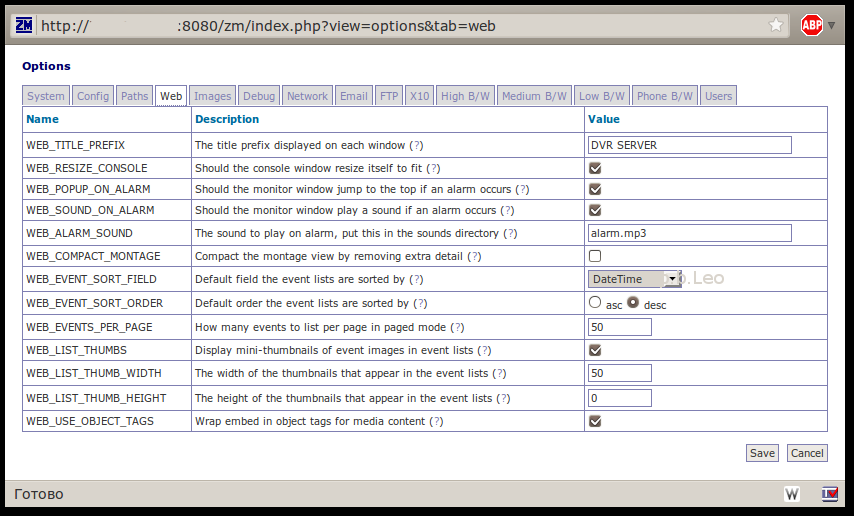
WEB_TITLE_PREFIX — Здесь вы можете указать название вашего DVR сервера. Удобно, если у вас несколько серверов (указал название своего сервера);
WEB_RESIZE_CONSOLE — Должна ли консоль изменять размер окна при надобности. По умолчанию ZM сокращает размер окна, чтобы показать только существующие мониторы. Это сделано чтобы окно выглядело ненавязчивым, но возможно вам не удобны подобных размеров окна, тем более если окно открывается во вкладке браузера. Отключите данную опцию, чтобы размер окна не изменялся (изменил — нет);
WEB_POPUP_ON_ALARM — Поместить окно монитора по верх всех окон, в случае тревоги. При живом просмотре мониторов вы можете определить, хотите ли вы чтобы окно, которое могло быть свернуто, всплывало по верх всех окон, в случае если сработала тревога. Это может быть полезным, если например ваши мониторы просматривают ворота, окно может всплыть по верх окон, если кто то подъехал к воротам. (оставил по умолчанию — да);
WEB_SOUND_ON_ALARM — Проигрывать звук в случае срабатывания сигнала тревоги. Вы можете указать, должно ли окно монитора воспроизводить сигнал в случае срабатывания тревоги (оставил по умолчанию — да);
WEB_ALARM_SOUND — название звукового файла сигнала тревог, который находится в директории указанной в параметре DIR_SOUNDS; (указал имя файла alarm.mp3, предварительно залив его в папку, путь которой указан в опции DIR_SOUNDS);
WEB_COMPACT_MONTAGE — Компактный скомпонованный режим просмотра, методом удаления дополнительных деталей. Скомпонованный режим просмотра показывает все активные мониторы в одном окне, включая небольшое меню, содержащее информацию о каждом мониторе. Это может генерировать дополнительный трафик и сделать размер окна больше чем нужно. Включив данную опцию можно удалить всэ дополнительную информацию (оставил по умолчанию — нет);
WEB_EVENT_SORT_FIELD — Сортировать события по определенному полю. События в списке могут быть отсортированы так как вам захочется. С помощью данной опции можно выбрать поле, по которому должны сортироваться события. Так же способ сортировки можно изменять нажатием по заголовку (оставил по умолчанию — DateTime);
WEB_EVENT_SORT_ORDER — Сортировать события по определенному порядку. События в списке могут быть отсортированы так как вам захочется. Данная опция определяет, в каком порядка (по возрастанию или убыванию) сортировать события (изменил на desc);
WEB_EVENTS_PER_PAGE — Количество событий отображаемых на одной странице. В списке событий вы можете получить список всех событий или только страницу. Данная опция позволяет указать сколько событий отображать на одной странице и сколько раз повторять заголовки при просмотре всех событий за раз (изменил на 50);
WEB_LIST_THUMBS — Показывать эскиз событий в списке событий. По умолчанию в списке событий отображается только текст для экономии пространства и времени. С помощью данного параметра вы можете видеть небольшие эскизы каждого события, чтобы помочь вам выявить интересующие события. Размер данных эскизов вы можете изменить в следующих параметрах. (изменил на да);
WEB_LIST_THUMB_WIDTH — Ширина эскиза события в списке событий. Этот параметр определяет ширину эскиза события в списке событий. Размер должен быть не большим, чтобы эскиз нормально вписывался в таблицу. При желании вы можете указать высоту в следующем параметре, но имейте в виду что задать вы можете или ширину или высоту. В случае ели у вас указана и ширина и высота использоваться будет только ширина (оставил по умолчанию);
WEB_LIST_THUMB_HEIGHT — Высота эскиза события в списке событий. Этот параметр определяет высоту эскиза события в списке событий. Размер должен быть не большим, чтобы эскиз нормально вписывался в таблицу. При желании вы можете указать высоту в следующем параметре, но имейте в виду что задать вы можете или ширину или высоту. В случае ели у вас указана и ширина и высота использоваться будет только ширина (оставил по умолчанию);
WEB_USE_OBJECT_TAGS — (оставил по умолчанию);
Вкладка Изображения (Images):
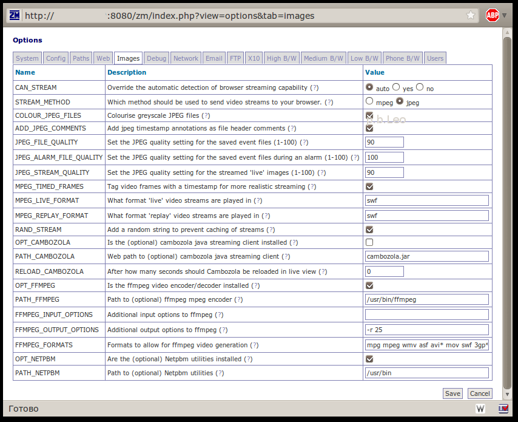
CAN_STREAM — Переопределение автоматически обнаруженного в браузере потока передачи. Если ваш браузер может обрабатывать потоки изображений ‘multipart/x-mixed-replace’, но ZM не понимает это, то вы можете использовать данную опцию, чтобы обеспечить поток без плагина Cambozola. Выбор параметра «Да» означает что ваш браузер может работать с потоками. Выбор параметра «Нет» обозначает что будут использоваться плагины. При выборе параметра «Авто» ZM решает сам (установил Auto);
STREAM_METHOD — Метод передачи видео потока в браузер. ZM может передавать либо на mpeg видео, либо jpeg изображение. При выборе mpeg убедитесь, что в вашем браузере установлены необходимые плагины. При выборе jpeg без настроек у вас все будет работать на Mozilla или на Internet Explorer с установленным Java (выбрано jpeg);
COLOUR_JPEG_FILES — Переводить ли цветные картинки в черно белые. С помощью данной опции весь отснятый материал цветной камеры можно перевести в черно белый. Плюс данной настройки в том, что можно экономить место на HDD (оставил по умолчанию);
ADD_JPEG_COMMENTS — Добавить в заголовки jpeg файлов аннотации или комментарии. Jpeg файлы могут иметь ряд полей которые добавляются в заголовки файлов. В поле комментария может быть добавлен любой текст. При сохранении изображений событий в архив, данная опция поможет вам найти события с помощью стороннего программного обеспечения, которое умеет читать заголовки файлов jpeg (включил);
JPEG_FILE_QUALITY — Качество Jpeg файлов любых событий сохраняемых на HDD. При обнаружении событий ZM сохраняет файлы в формате jpeg, которые можно просматривать или переводить в видео поток. Чем выше цифра, тем качественнее будут сохраняться кадры, но при слабом интернет соединении просмотр изображений может занять много времени. Чем ниже цифра, тем быстрее вы сможете просматривать события, но качество оставит желать лучшего. Этот параметр относится ко всем файлам, которые пишутся на диск, за исключением тех событий, которые сработали по тревоги (оставил 90);
JPEG_STREAM_QUALITY -Качество Jpeg файлов тревожных событий сохраняемых на HDD. Данная настройка равносильна параметру JPEG_FILE_QUALITY. Если значение меньше, чем основное, то оно игнорируется, чтобы важные события небыли испорчены. По умолчанию значение установлено на «0». Это означает что данная настройка попросту отключена и параметры качества задаются в настройке JPEG_FILE_QUALITY (оставил 100);
MPEG_TIMED_FRAMES — Помечать видео кадры меткой времени, для более реалистичного воспроизведения. При использовании MPEG метода в качестве базового, zm может передавать картинку двумя способами. Если данная опция включена, то каждый кадр взятый в момент захвата помечается меткой времени. Таким образом при изменении частоты кадров (при тревоге) поток будет поддерживаться в реальном времени. Если данная опция не включена, то частота кадра рассчитывается приблизительно. Данная опция рекомендуется в случае возникновения проблем с выбранным методом передачи видео (оставил по умолчанию);
MPEG_LIVE_FORMAT — В каком формате воспроизводить «живой» поток? При использовании MPEG метода ZM может воспроизводить видео в реальном времени. Но в зависимости от платформы можно выбрать формат воспроизведения. Данная опция позволяет выбрать видео формат посредством изменения расширения файла. По умолчанию формат ASF прекрасно работает в Windows платформе, с помощью Windows Media Player, но не факт что он будет работать на Linux платформе (оставил по умолчанию swf);
MPEG_REPLAY_FORMAT -
RAND_STREAM -
OPT_CAMBOZOLA — Установлен ли java апплет на сервере. Cambozolla это удобный Java-апплет для ZM, который используется для просмотра потока изображений на браузерах, например internet explorer, которые изначально не корректно работают с данным форматом. Рекомендуется установить данный апплет, во избежания проблем при просмотре потока в IE.
Немного о Cambozola …
Все же проблемы возникли, причем возникли с браузером Chromium, поэтому здесь я расскажу, что нужно сделать чтобы установить Cambozola:
Зайдем в директорию /usr/local/src:
$ cd /usr/local/src
Скачаем последнюю версию пакета:
$ sudo wget http://www.charliemouse.com/code/cambozola/cambozola-latest.tar.gz
Распакуем скачанный архив:
$ sudo tar xvfz cambozola-latest.tar.gz
Скопируем апплет в папку ZM:
$ sudo cp /usr/local/src/cambozola-0.92/dist/cambozola.jar /usr/share/zoneminder/
Ну а далее включаем эту установку, таким образом картинка будет корректно отображаться.
Продолжаем настройку …
PATH_CAMBOZOLA -
Web path to (optional) cambozola java streaming client. Cambozola is a handy low fat cheese flavoured Java applet that ZoneMinder uses to view image streams on browsers such as Internet Explorer that don’t natively support this format. If you use this browser it is highly recommended to install this from http://www.charliemouse.com/code/cambozola/ however if it is not installed still images at a lower refresh rate can still be viewed. Leave this as ‘cambozola.jar’ if cambozola is installed in the same directory as the ZoneMinder web client files.
RELOAD_CAMBOZOLA -
After how many seconds should Cambozola be reloaded in live view. Cambozola allows for the viewing of streaming MJPEG however it caches the entire stream into cache space on the computer, setting this to a number > 0 will cause it to automatically reload after that many seconds to avoid filling up a hard drive.
OPT_FFMPEG -
Is the ffmpeg video encoder/decoder installed. ZoneMinder can optionally encode a series of video images into an MPEG encoded movie file for viewing, downloading or storage. This option allows you to specify whether you have the ffmpeg tools installed. Note that creating MPEG files can be fairly CPU and disk intensive and is not a required option as events can still be reviewed as video streams without it.
PATH_FFMPEG -
Path to (optional) ffmpeg mpeg encoder. This path should point to where ffmpeg has been installed.
FFMPEG_INPUT_OPTIONS -
Additional input options to ffmpeg. Ffmpeg can take many options on the command line to control the quality of video produced. This option allows you to specify your own set that apply to the input to ffmpeg (options that are given before the -i option). Check the ffmpeg documentation for a full list of options which may be used here.
FFMPEG_OUTPUT_OPTIONS -
Additional output options to ffmpeg. Ffmpeg can take many options on the command line to control the quality of video produced. This option allows you to specify your own set that apply to the output from ffmpeg (options that are given after the -i option). Check the ffmpeg documentation for a full list of options which may be used here. The most common one will often be to force an output frame rate supported by the video encoder.
FFMPEG_FORMATS -
Formats to allow for ffmpeg video generation. Ffmpeg can generate video in many different formats. This option allows you to list the ones you want to be able to select. As new formats are supported by ffmpeg you can add them here and be able to use them immediately. Adding a ‘*’ after a format indicates that this will be the default format used for web video, adding ‘**’ defines the default format for phone video.
OPT_NETPBM -
Are the (optional) Netpbm utilities installed. For low bandwidth situations ZoneMinder will resize images into thumbnails on the fly before sending them to the browser to reduce the network traffic at the expense of CPU on the server. It uses the Netpbm package to do this and this option should be set to where the binaries from that package are installed. If you do not have it installed it means that the images will always be sent full size and rescaled on your browser which may or not be an issue for you.
PATH_NETPBM -
Path to (optional) Netpbm utilities. For low bandwidth situations ZoneMinder will resize images into thumbnails on the fly before sending them to the browser to reduce the network traffic at the expense of CPU on the server. It uses the Netpbm package to do this and this option should be set to where the binaries from that package are installed. If you do not have it installed it means that the images will always be sent full size and rescaled on your browser which may or not be an issue for you.
Вкладка Отладка (Debug):
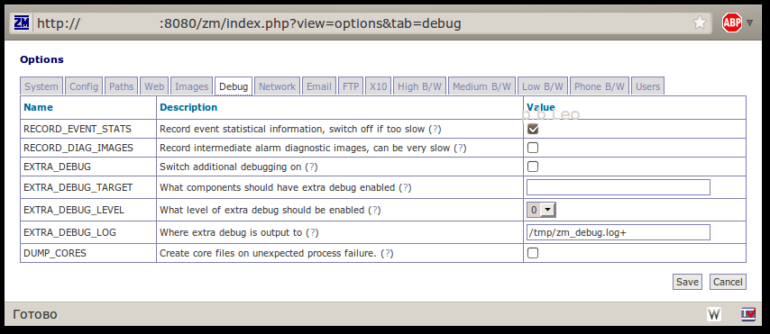
RECORD_EVENT_STATS — Записывать статистическую информацию событий. Отключите данную опцию, если ZM работает недостаточно быстро. Данная версия ZM умеет записывать подробную информацию о событиях, в таблицу Stats. Эта опция может помочь в тонкой настройке зон, несмотря на то что это сложно сделать. В будущих версиях настройка зон будет интуитивно понятной. По умолчанию опция включена (оставил по умолчанию);
RECORD_DIAG_IMAGES — Записывать промежуточные диагностические изображения. Дополнительно для записи статистической информации событий вы можете промежуточные диагностические изображения для отладки тревоги. Данный параметр по умолчанию отключен так как потребляет много ресурсов (оставил по умолчанию);
EXTRA_DEBUG — Включить дополнительную отладку. У бинарных компонентов ZM есть несколько уровней вывода информации он отладке. Как правило значение бывает на низком уровне, дабы не забивать журналы слишком быстро. Опция заработает после перезапуска (оставил по умолчанию);
EXTRA_DEBUG_TARGET — Для каких компонентов включить дополнительную отладку. Если поле оставить пустым, то все компоненты будут работать в режиме отладки. Если в поле вписать опцию вида «_<компонент>» (ну например «_zmc»), то в debug режиме будет работать только указанный компонент. Если в поле вписать опцию вида «_<компонент>_<тождество>» (ну например «_zmc_m1″), то в debug режиме будет работать только указанный компонент (оставил по умолчанию);
EXTRA_DEBUG_LEVEL — Выберите уровень отладки. существует 9 уровней отладки, самый высокий уровень — 9 и самый низкий уровень — 0. Но не все компоненты умеют работать со всеми уровнями. так же в случае высокого уровня отладки возможны проблемы с производительностью системы. Поэтому уровень отладки необходимо выставлять осторожнее (оставил по умолчанию);
EXTRA_DEBUG_LOG — Куда записывать логи отладки. В зависимости от вашей системы, вы можете найти информацию, предупреждения и ошибки в вашем системном логе. Этот параметр предоставляет вам возможность указать путь до отдельного лог-файла. Но если это простое имя файла, то возможно что несколько компонентов будут писать в один и тот же файл и при перезапуске служб будут удаляться данные из этого файла. чтобы избежать этого вам нужно в конце файла добавить символ «+», таким образом будет создаваться файл с pid-ом процесса, из чего следует, что у каждого компонента будет свой debug файл (оставил по умолчанию);
DUMP_CORES — Создавать ключевые файлы в случае отказа процесса. В случае отказа процессов ZM детали данного сбоя записываются в лог, чтобы можно было проанализировать сбой. Но в некоторых случаях удобнее было бы диагностировать сбой, если бы создавался основной файл, в котором содержался бы дамп памяти этого процесса. Таим образом данный сбой был бы проанализирован в интерактивном режиме отладчиком, и можно было увидеть намного больше информации чем в системном журнале. Рекомендуется данную опцию использовать продвинутым пользователям (оставил по умолчанию);
Вкладка «Сеть» (Network):
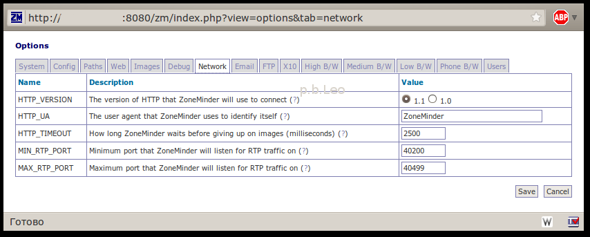
HTTP_VERSION — Какую версию HTTP использовать ZM-у. ZM может взаимодействовать с сетевыми камерами с помощью стандарта HTTP/1.1 или HTTP/1.0 (оставил по умолчанию HTTP/1.1);
HTTP_UA — Агент ZM для своей идентификации. При подключении к удаленным камерам ZM идентифицирует себя по данному параметру и версии. Обычно это достаточно. Но если вам ппалась камера, которая может общаться только с определенной версией браузера, вы можете изменить эту строчку на другое значение, например Internet Explorer или Netscape и т.д. (оставил по умолчанию, так как сетевых камер я не использую);
HTTP_TIMEOUT — Как долго ZM ждать изображение от сетевой камеры. Данный параметр указывает, тайм аут в миллисекундах ожидания потока от сетевой камеры (оставил по умолчанию, так как сетевых камер я не использую);
MIN_RTP_PORT — Порт, который слушает ZM для трафика RTP от. При использовании ZM — ом сетевой камеры с потоком MPEG4 передающимся RTP протоколом Unicast методом, необходимо указать порты для камеры, которая будет контролировать передачу данных (я вроде понял это так…). Обычно 2 соседних порта используются для каждой камеры, причем один для управления пакетами, а другой для пакетов данных. Данный порт должен быть четным числом, так же не забудьте проверить настройки firewall (оставил по умолчанию, так как сетевых камер я не использую);
MAX_RTP_PORT — Порт, который слушает ZM для трафика RTP до. При использовании ZM — ом сетевой камеры с потоком MPEG4 передающимся RTP протоколом Unicast методом, необходимо указать порты для камеры, которая будет контролировать передачу данных (я вроде понял это так…). Обычно 2 соседних порта используются для каждой камеры, причем один для управления пакетами, а другой для пакетов данных. Данный порт должен быть четным числом, так же не забудьте проверить настройки firewall (оставил по умолчанию, так как сетевых камер я не использую);
Вкладка «Почта» (Email):
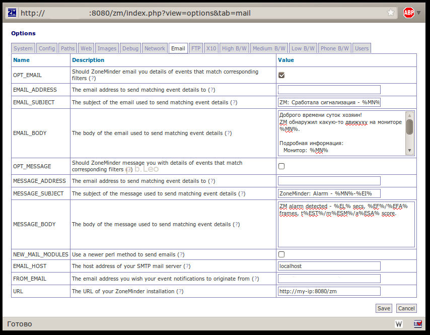
OPT_EMAIL — Должен ли ZM отправлять по электронной почте детали событий, которые соответствуют подходящему фильтру. В ZM можно создать фильтры которые могут определить нужно ли при определеных критериях событий отправлять оповещение по электронной почте. С помощью данной функции вы будете получать информацию о том или ином событии. Данная опция включает или отключает эту функцию. Письма отправляемые zm после включения данной опции корректно читаются только в почтовых клиентах (поставил галочку);
EMAIL_ADDRESS — Адрес электронной почты, куда необходимо отправлять оповещения. В Данном поле вам необходимо указать адрес, куда необходимо отправлять оповещения событиях (тут я заполнил свой почтовый адрес);
EMAIL_SUBJECT — Здесь нужно указать тему письма, которое будет оправлено в случае тревоги. (%MN% — показывает название монитора, %EI% — показывает id события, %ESM% — показывает… ,%ESA% — показывает… , %EFA% — показывает… ). Данный параметр можно заполнить по своему вкусу, например:
ZM: Сработала сигнализация - %MN%-%EI% (%ESM% - %ESA% %EFA%)
EMAIL_BODY — Текст сообщения, которое отсылается пользователю. (%EL% — показывает продолжительность события, %EF% — показывает …, %EST% — показывает …, %EPS% — показывает … ). Данный параметр можно записать по своему вкусу. Я написал ее так:
Доброго времени суток хозяин!
ZM обнаружил какую-то движуху на мониторе %MN%.
Подробная информация:
Монитор: %MN%
ID события: %EI%
Продолжительность: %EL%
Кадры: %EF% (%EFA%)
Результаты: t%EST% m%ESM% a%ESA%
Данная тревога сработала из за фильтра %FN%. Посмотреть ее можно тут - %EPS%
---
DVR SERVER
OPT_MESSAGE — Должен ли ZM отправлять отправлять короткие сообщения с информацией о событиях, которые соответствуют подходящему фильтру. В ZM можно создать фильтры которые могут определить нужно ли при определеных критериях событий отправлять сообщения. С помощью данной функции вы будете получать информацию о том или ином событии. Данная опция включает или отключает эту функцию. Сообщения отправляемые zm при включенной данной опции будут короткими, так как предполагают использование SMS шлюза, для получения информации на телефон (шлюза у меня нет, поэтому галочку я не ставил);
MESSAGE_ADDRESS — Адрес электронной почты, куда необходимо отправлять сообщения. В Данном поле вам необходимо указать адрес, куда необходимо отправлять короткие сообщения о событиях. (оставил пустым, так как не нужно);
MESSAGE_SUBJECT — Здесь нужно указать тему письма, которое будет оправлено в случае тревоги (тут я все оставил по умолчанию);
MESSAGE_BODY — Само сообщение которое будет отправлено в случае тревоги, если она соответствует фильтру (оставил так как было);
NEW_MAIL_MODULES — Использовать обновленный модуль отправки сообщений. По умолчанию ZM использует модуль MIME:: Entity Perl для отправки сообщений на электронную почту. Но некоторым пользователем этот модуль кажется недостаточно гибким, и так же были с ним возможны проблемы. Если у вас возникают подобного рода проблемы, попробуйте воспользоваться более новым методом (MIME:: Lite и Net:: SMTP). Этот метод был внесен Ross Melin, поддерживает SMTP и должен работать без проблем. Но так как данный метод недостаточно протестирован — по умолчанию он выключен (оставил по умолчанию);
EMAIL_HOST — Адрес SMTP сервера. Если вы выбрали SMTP метод отправки сообщений, то вам необходимо тут указать адрес SMTP сервера. По умолчанию здесь указана опция localhost, поэтому если у вас установлен sendmail, exim или аналогичный сервер, то сообщения будут доставляться. Но так же есть возможность указать smtp адрес вашего провайдера (оставил по умолчанию localhost);
FROM_EMAIL — От какова адреса будут отправляться сообщения на электронную почту. Данная опция удобна, если вы хотите фильтровать сообщения на вашем почтовом ящике. В адрес можно указать что-то вроде zm@your-domain.org (указал желаемый адрес, хотя тоже нафиг не нужно);
URL — URL адрес до ZM. отправляемые сообщения могут содержать ссылки на те или иные события. Для того, чтобы это корректно работало, необходимо указать адрес, например http://host.your.domain/zm.php. (в нашем случае я указал http://my-ip:8080/zm);
Вкладка FTP:
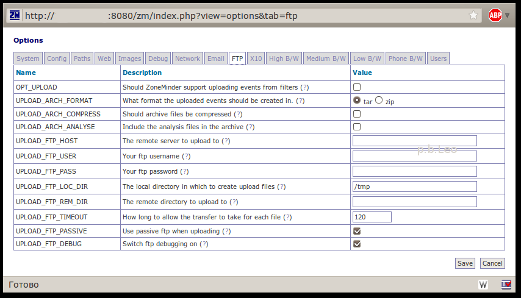
OPT_UPLOAD — Должен ли ZM загружать события по FTP. В ZM можно создать фильтр, в правилах которого можно включить загрузку событий по FTP;
UPLOAD_ARCH_FORMAT — В каком формате должны загружаться события на FTP сервер. Загружаемые события могут быть сохранены в формате tar или zip. С помощью данной опции можно выбрать, в каком формате загружать события. Имейте в виду, что для корректной работы данного модуля необходимо установить PERL модуль Archive::Tar и Archive::Zip;
UPLOAD_ARCH_COMPRESS — Сжимать за архивированные файлы. При создании архивов, файлы могут сжиматься. Данная опция полезна, если у FTP сервера ограниченно место на HDD;
UPLOAD_ARCH_ANALYSE — Включать аналитические файлы в архив;
UPLOAD_FTP_HOST — адрес удаленного сервера для загрузки файлов;
UPLOAD_FTP_USER — имя пользователя для доступа к FTP серверу;
UPLOAD_FTP_PASS — пароль пользователя для доступа к FTP серверу;
UPLOAD_FTP_LOC_DIR — временная локальная директория на сервере, которая используется для загрузки файлов. После загрузки, файлы, которые будут в данном каталоге будут удалены;
UPLOAD_FTP_REM_DIR — удаленный каталог на FTP сервере, где необходимо сохранять файлы;
UPLOAD_FTP_TIMEOUT — Максимальный тайм-аут для неактивных протоколов передачи файлов (в секундах);
UPLOAD_FTP_PASSIVE — Использовать passive режим передачи файлов. Можно включить, если ваш сервер находится за маршрутизатором с брандмауэром или прокси сервером;
UPLOAD_FTP_DEBUG — Включить режим отладки для FTP. Можно включить, если вы наблюдаете проблемы при загрузке файлов;
Вкладка X10 (Умный дом):
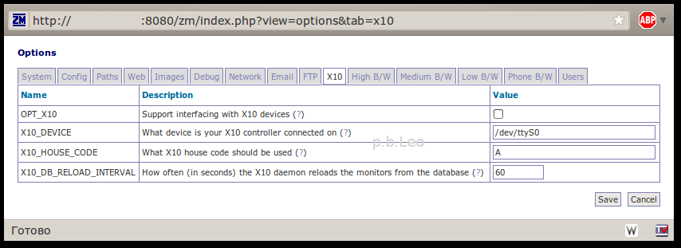
OPT_X10 — Включить поддержку ZM устройств X10 «Умный дом»;
X10_DEVICE — Путь до порта к которому подключен контроллер X10. По умолчанию тут указан /dev/ttyS0 (Последовательный или COM-1 порт);
X10_HOUSE_CODE — Какой код используется в X10 устройстве. (Буква от A до P);
X10_DB_RELOAD_INTERVAL — Как часто демон X10 перезагружает данные монитора из базы данных (в секундах);
Несколько вкладок, а именно:
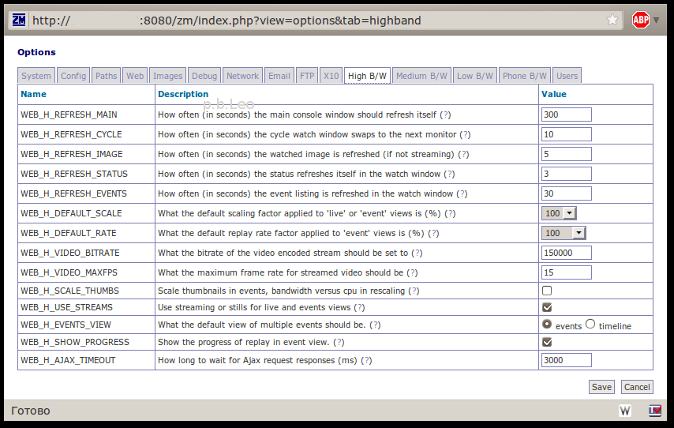
High B/W (Высокая пропускная способность интернет соединения.
Параметр начинается на WEB_H_…),
Medium B/W(Средняя пропускная способность интернет соединения.
Параметр начинается на WEB_M_…),
Low B/W(Низкая пропускная способность интернет соединения.
Параметр начинается на WEB_L_…).
WEB_…_REFRESH_MAIN — Как часто (в секундах) обновлять главную страницу консоли;
WEB_…_REFRESH_CYCLE — С каким интервалом (в секундах) менять монитор при циклическом просмотре мониторов;
WEB_…_REFRESH_IMAGE — С каким интервалом (в секундах) обновлять изображение при отключенном режиме передачи потока;
WEB_…_REFRESH_STATUS — Как часто (в секундах) обновлять состояние области с часами при просмотре монитора;
WEB_…_REFRESH_EVENTS — Как часто (в секундах) обновлять состояние области с событиями при просмотре монитора;
WEB_…_DEFAULT_SCALE — Какой масштаб картинки применяется к монитору или просмотру событий. Значение 100% — нормальный размер;
WEB_…_DEFAULT_RATE — Скорость воспроизведения событий. Значение 100% — нормальная скорость;
WEB_…_VIDEO_BITRATE — Максимальный Битрейт, который будет использоваться для видео потока;
WEB_…_VIDEO_MAXFPS — Максимальная частота кадров, которая будет использоваться для видео потока;
WEB_…_SCALE_THUMBS — Создавать превью изображений событий;
WEB_…_USE_STREAMS — Использовать потоковую передачу для просмотра событий;
WEB_…_EVENTS_VIEW — Как по умолчанию предоставлять несколько событий;
WEB_…_SHOW_PROGRESS — Показывать линию процесса при просмотре событий;
WEB_…_AJAX_TIMEOUT — Время ожидания Ajax запросов.
Вкладка Phone B/W (Очень низкая пропускная способность интернет соединения).
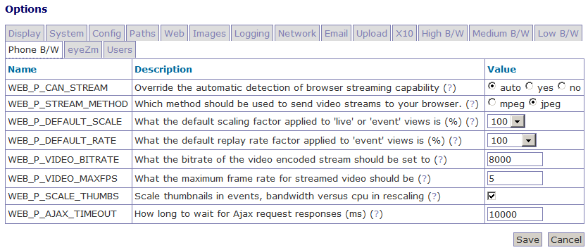
WEB_P_DEFAULT_RATE — Скорость воспроизведения событий. Значение 100% — нормальная скорость;
WEB_P_SCALE_THUMBS — Создавать превью изображений событий;
WEB_P_AJAX_TIMEOUT — Время ожидания Ajax запросов.
Вкладка Users. (Пользователи).
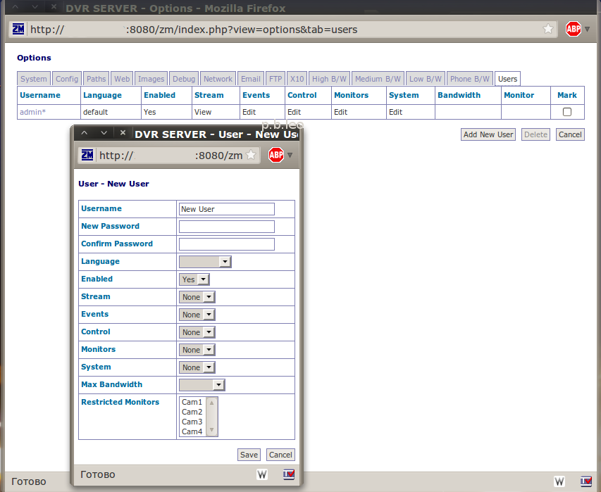
При просмотре данной вкладке вы увидите только таблицу пользователей и привилегии, которые им разрешены. Здесь я рассмотрю все настройки:
Поле UserName — туда нужно набрать желаемое имя пользователя; NewPassword — набираем желаемый пароль для данного пользователя, Confirm Password — повторяем пароль; Language — определённому пользователю можно назначить свою локализацию консоли, если значение пустое то используется локализация по умолчанию; Enabled — включить этого пользователя или нет; Stream — может ли пользователь просматривать мониторы; Events — что может делать данный пользователь с событиями, где none — ничего, view — только просматривать, edit — просматривать и редактировать; Control — где none — ничего, view — только просматривать, edit — просматривать и редактировать; Monitors — что может делать пользователь с мониторами, где none — ничего, view — только просматривать, edit — просматривать и редактировать; System — что может делать пользователь с системными настройками, где none — ничего, view — только просматривать, edit — просматривать и редактировать; MaxBandwidth — максимальная пропускная способность канала для данного пользователя; Restricted Monitors — Здесь можно ограничить пользователя определенным мониторам (удерживайте клавишу ctrl, чтобы выбрать несколько мониторов).
Производим основные настройки по своему вкусу. Что смог перевести — перевел. То что НЕ переведено — будет переведено со временем, так же имейте в виду что английский язык я знаю плохо, поэтому если что не так — пишите…
5. Добавляем камеру.
Здесь я так же распишу все параметры которые там есть, но для начала жмем кнопку Add Monitor и видим вкладку General
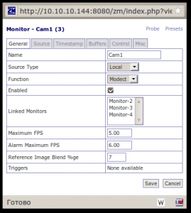
Где :
Name — Указываем имя монитора;
Sours type - указываем тип источника (локальный, удаленный, файл, ffmpeg);
Function — функция монитора, где none — не использовать, Monitor — только просматривать;
Enabled — с помощью данной опции мы можем включить или выключить монитор;
Linked Monitors — с помощью данной опции мы можем связать мониторы;
Max FPS — Здесь мы можем указать максимальное количество кадров в секунду;
Alarm Max FPS — Максимальное количество кадров в секунду для тревоги.
Reference Image Blend %ge — Прозрачность опорного кадра, в %;
Triggers — пока не знаю что это …
Далее переходим во вкладку Source, где видим следующие настройки:
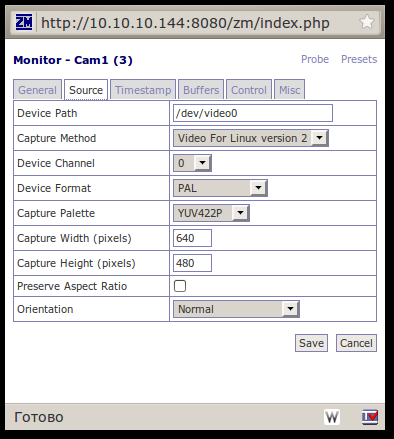
Device Path — путь до видео устройства (как правило это /dev/video0, хотя если устройств несколько, то может быть /dev/video1 например);
Capture Method — Метод захвата видео потока (предпочтительно Video For Linux v.2);
Device Channel — Канал видео устройства(Камера у меня подключена к выводу Video0 => канал 0);
Device Format — Формат камеры (Поставил Pal);
Capture Palette — режим захвата (Поставил YUV422P);
Capture Width (pixels) — Ширина изображения (640);
Capture Height (pixels) — Высота изображения (480);
Preserve Aspect Ratio — Сохранять пропорции (Здесь ставим галочку);
Orientation — Ориентация картинки (Оставил нормальную).
Переходим во вкладку Timestamp (Метка времени), и видим следующие настройки:
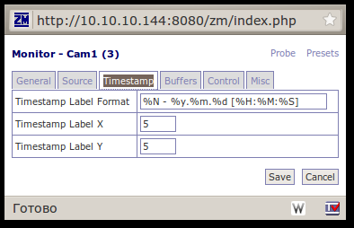
Timestamp Lable Format — Формат вывода даты и времени на изображении, где:
%N — имя монитора, %y — Год, %m — Месяц, %d — День, %H — Часы, %M - Минуты, %S — Секунды.
(Для себя я выставил все таким образом: %N — %y.%m.%d [%H:%M:%S]
Timestamp Lable X — Положение метки по оси X (Оставил по умолчанию);
Timestamp Lable Y — Положение метки по оси Y (Оставил по умолчанию).
Теперь переходим во вкладку Buffers (Буферы) и видим следующее :
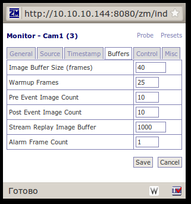
(Данную вкладку я особо расписывать не буду, так же возможна немного ошибочная расшифровка параметров, так как смысл некоторых я так и не понял, все значения я оставил по умолчанию)
Image Buffer Size (frames) - Размер буфера изображения (в кадрах);
Warmup Frames — WTF?!;
Pre Event Image Count — Буфер изображения до события;
Post Event Image Count — Буфер изображения после событий;
Stream Replay Image Buffer — Буфер воспроизведения потока изображения;
Alarm Frame Count — счетчик кадра тревоги.
Далее, если в настройках у нас включена поддержка управляемых камер (параметр OPT_CONTROL), то здесь мы увидим данную вкладку:
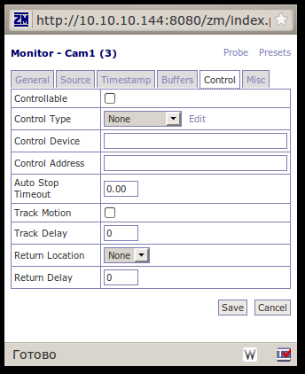
(p.s.: Управляемой камеры у меня нет, но настройки я распишу, чтобы было как справочное пособие …)
Controllable — Включить область с инструментами контроля камеры;
Control Type — Тип управления, так же там есть ссылка «Edit» (Редактировать), куда можно добавить другие параметры типа управления:
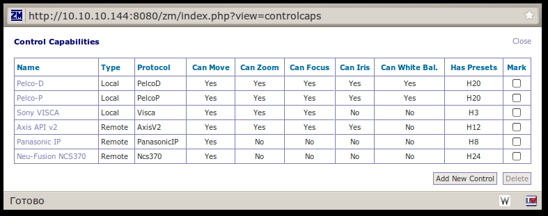
Control Device — Здесь указываем устройство контроля;
Control Adress —
Auto Stop Timeout —
Track Delay —
Return Location —
Return Delay —
Осталась вкладка Misc (прочее), где есть следующие параметры:
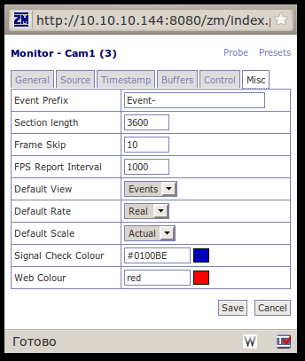
Event Prefix — Префикс имени события;
Section length — Длина секции (в кадрах);
Frame Skip —
FSP Report Interval —
Default View —
Default Rate —
Default Scale —
Signal Check Colour —
Web Colour —
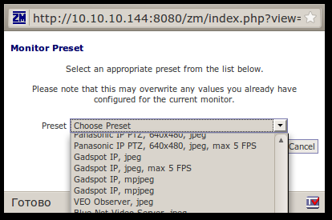
Так же есть еще ссылка Presents, где возможно выбрать пред установку камер, но будьте осторожны, все настройки, которые вы проводили ранее, будут удалены, и проверьте путь к устройству.
Если все сделано правильно, а так же правильно подключена камера к монитору — то вы уже можете увидеть картинку!
6.Режимы записи
ZM умеет работать в нескольких режимах, а именно:
В моем случае подходящий режим работы будет Motion, так как мне нужна запись только в случае появления тех или иных личностей. Поэтому га главной странице консоли изменяем функцию интересующих нас мониторов с «Monitor» на «Motion».
Так же при желании можно настроить зоны, которые нас интересуют.
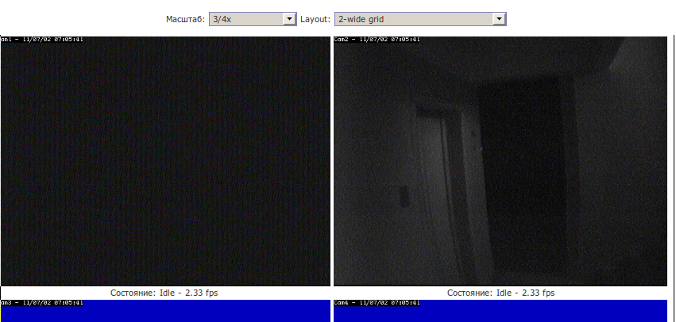
7.Проблема с автозагрузкой.
После перезагрузки сервера я замечал одну нехорошую особенность … ZM не запускался. Просмотрев логи в Syslog я нашел следующую строчку:
zmfix[1023]: ERR [Can't connect to server: Can't connect to local MySQL server through socket '/var/run/mysqld/mysqld.sock' (2)]
Оказывается данная проблема уже известна разработчикам, и решение они видят следующее:
Открываем файл /etc/init.d/zoneminder
$ sudo vim /etc/init.d/zoneminder
находим там строчку
zmfix -a
и выше вставляем
sleep 15
перезагружаем машину и радуемся рабочему сервису.
{kind=link}